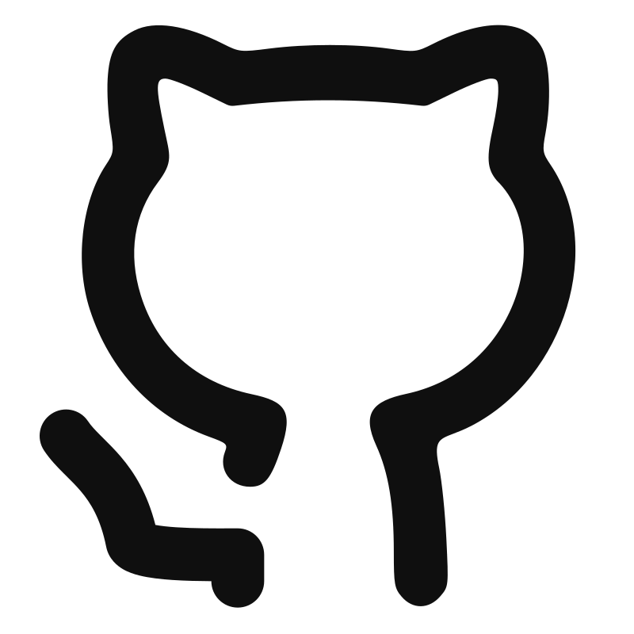

Informations
- Rennes
- Permis B et véhiculé
-  foobarberis
-
 foobarberis.net
foobarberis.net
- foobarberis@gmail.com
Compétences technologiques
- Langages : Python, Bash/Powershell, C/C++, Javascript, YAML, HTML/CSS
- DevOps & Cloud : Docker, Jenkins, Kubernetes, GitLab CI, AWS, vSphere
- Monitoring : Prometheus, Grafana
- Systèmes : Linux, Windows, macOS
- Documentation : Antora
Formation
-
Concepteur développeur de solutions informatiques
-
CAP « Menuisier installateur »
Lyon, 42 Lyon Auvergne-Rhône-Alpes, 2022 - Présent
Dijon, CFA des Compagnons du Devoir, 2017 - 2019
Langues
- Anglais : C2
- Espagnol : B2
Matthieu Barberis
Ingénieur DevOps Junior | Cloud & Automatisation
Actuellement en formation de « Concepteur développeur de solutions informatiques » à l'école 42, je suis passionné par l'automatisation, le cloud et les pratiques DevOps. Fort d'une première expérience professionnelle en tant que stagiaire DevOps chez bioMérieux, où j'ai piloté la migration de pipelines CI/CD et géré l'automatisation d'infrastructure, je cherche à appliquer ces compétences pour construire et maintenir des systèmes robustes, scalables et sécurisés.
Expérience professionnelle
- Piloté la migration des pipelines CI/CD de l'application 3PConnect de Jenkins vers GitLab CI, réduisant le temps de maintenance et améliorant la fiabilité des déploiements.
- Développé des scripts d'automatisation pour provisionner des VM sur vSphere (runners GitLab, environnements de tests), assurant la disponibilité et la reproductibilité de l'infrastructure.
- Implémenté une stack de monitoring avec Prometheus et Grafana pour superviser les pipelines et l'application, améliorant la visibilité sur la santé de l'infrastructure CI/CD.
- Conçu des pipelines paramétrables avec une interface web pour déployer des VM d'intégration à la demande, simplifiant le processus pour les équipes de développement.
- Rédigé une documentation technique complète des processus DevOps, assurant la transmission des connaissances et la pérennité des solutions mises en place.
Stagiaire DevOps
Mars 2025 - Septembre 2025
bioMérieux, Département R&D, Bruz
Projets académiques et personnels
Vous pouvez retrouver la liste complète de mes projets sur mon portfolio en ligne.
ft_transcendance
Jeu de Pong en ligne avec architecture microservices
- Développement d'une architecture micro-service conteneurisée avec Docker et Docker Compose.
- Implémentation d'une API RESTful (Python/Django) et d'un frontend dynamique (Javascript).
minishell
Réimplémentation de Bash en C
- Création d'un lexer/parser pour transformer une chaîne de caractères en commandes exécutables.
ft_irc
Serveur IRC (RFC 2812) en C++
- Gestion de multiples connexions clients via des sockets UNIX et des I/O non-bloquantes.
Autres expériences
- Agent administratif, Centre hospitalier d'Auxerre (2021 - 2022)
- Service Civique, Lycée des métiers Vauban, Auxerre (2019 - 2020)
- Apprenti Menuisier, Menuiserie La Petite Cognée, Auxerre (2017 - 2019)
- Service Civique, Fédération de Pêche de l'Yonne, Auxerre (2017)